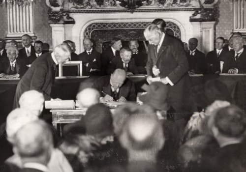

Directions: Study the photograph and the background note, then answer the questions.

Background. On August 27, 1928, representatives of fifteen nations signed the Kellogg-Briand Pact in Paris. In the pact the signing nations renounced war as an instrument of national policy and promised to settle their disputes by pacific means only. The pact set out no penalty for a nation that broke it.
1. What details in the photograph show that this is a formal act of governments, not a private agreement among the men in the room?
2. Germany signed this pact ten years after the First World War. State what the signers promised, and then state the one thing the pact deliberately did not provide.
3. A senator votes for the pact because it preserves the right of self-defense and requires nothing of the United States if another nation breaks it. Why do those two conditions fit the foreign policy pattern of the decade?
A second record. In 1921 Secretary of the Interior Albert B. Fall leased the Teapot Dome and Elk Hills naval oil reserves to two oil companies in secret, without competitive bidding. He received $100,000 in cash from Edward L. Doheny and large loans and gifts from Harry F. Sinclair.
4. Name the two features of the leases that made them corrupt, and state what happened to Fall when the leases were exposed.
5. By 1925 the top income tax rate has fallen from 73 percent to 25 percent, and the budget is in surplus. Give Secretary Mellon's argument for the cuts, and the criticism his opponents made.
1. What details in the photograph show that this is a formal act of governments? A single signer writes at a table in a state room of the French Foreign Ministry while the representatives of the other nations stand and sit in formal attendance, in dress clothes, before a crowd of officials and observers. The ceremony, the setting, and the assembled delegations mark it as an act between states. Students should cite the formal signing at the table and the gathered national representatives, not merely say the men look serious. (Blueprint 6)
2. State what the signers promised, and the one thing the pact deliberately did not provide. The signers renounced war as an instrument of national policy and promised to settle all disputes by pacific means only. The pact provided no enforcement: no penalty for breaking it, no court to judge a breach, and no force to stop a war. (Blueprint 6)
3. Why do the self-defense and no enforcement conditions fit the foreign policy pattern of the decade? The pattern was agreement without commitment. The United States signed treaties it negotiated itself, such as the Washington naval limits and the pact, lent money, and traded, but it refused the League of Nations and the World Court and would not promise in advance to act. A pact that preserved self-defense and imposed no duty to enforce it asked nothing the pattern forbade. (Blueprint 6)
4. Name the two features of the leases that made them corrupt, and state what happened to Fall. The leases were made in secret and without competitive bidding, and Fall took money from the men who received them: $100,000 in cash from Doheny and large loans and gifts from Sinclair. When the Senate investigation exposed the leases, Fall resigned, the courts canceled the leases, and in 1929 Fall went to prison, the first cabinet officer imprisoned for a crime committed in office. (Blueprint 5)
5. Give Mellon's argument for the tax cuts, and the criticism his opponents made. Mellon argued that a 73 percent top rate drove wealthy investors to shelter money in tax exempt bonds, where it paid no tax and built nothing, while a lower rate would draw capital into taxable, productive investment and still supply the Treasury. His opponents answered that the cuts, which brought the top rate to 25 percent by mid decade, gave most of their benefit to the wealthy while farmers and wage earners saw little change. (Blueprint 5)
Teacher note. This check is formative. Questions 1 to 3 test the foreign policy half of the lesson (Blueprint 6) and questions 4 and 5 the home half (Blueprint 5). Question 3 predicts success on the writing task, because it asks for the same pattern, action paired with refusal, that the essay requires.